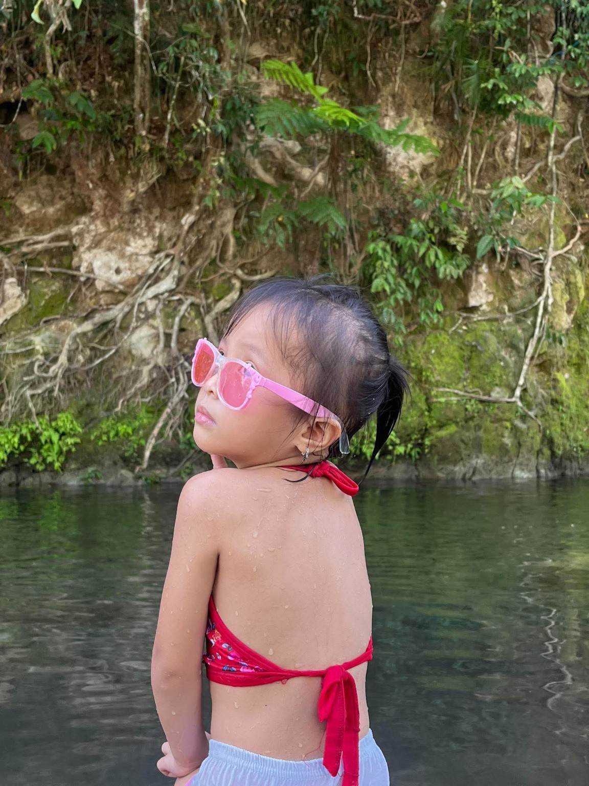
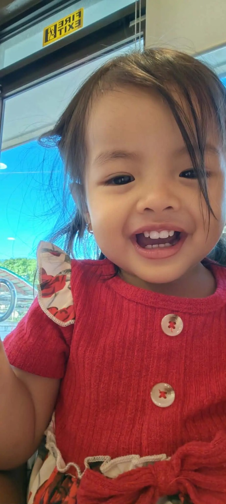
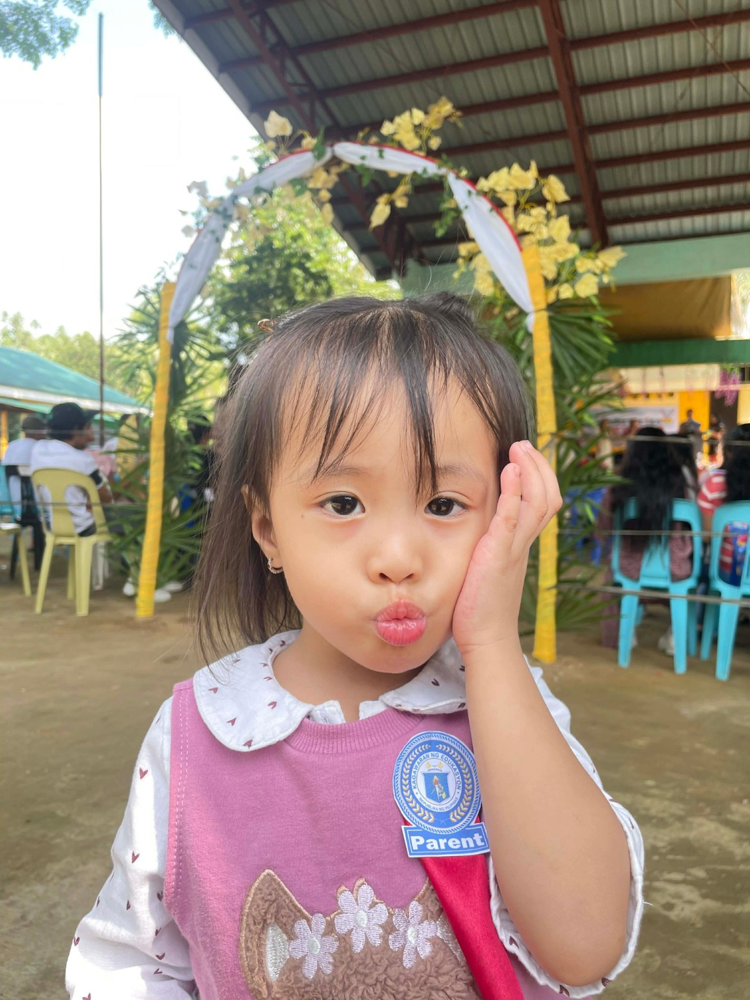
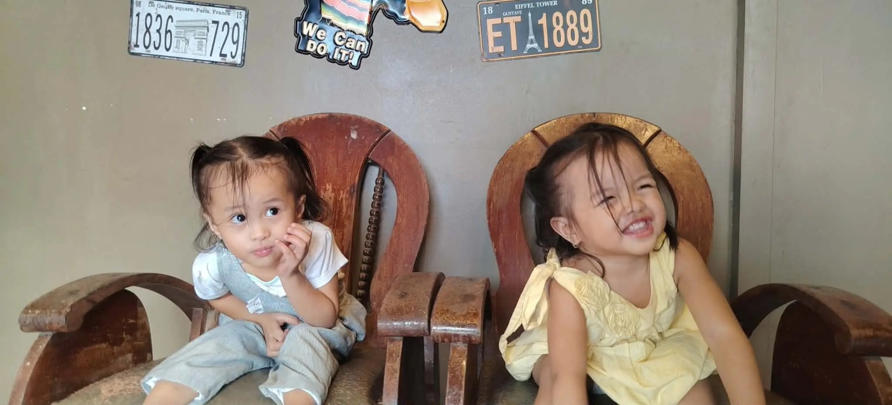
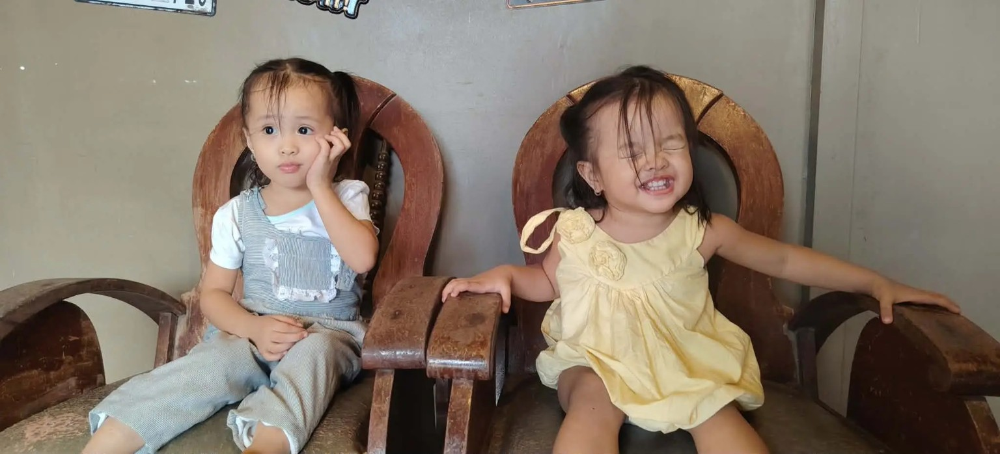
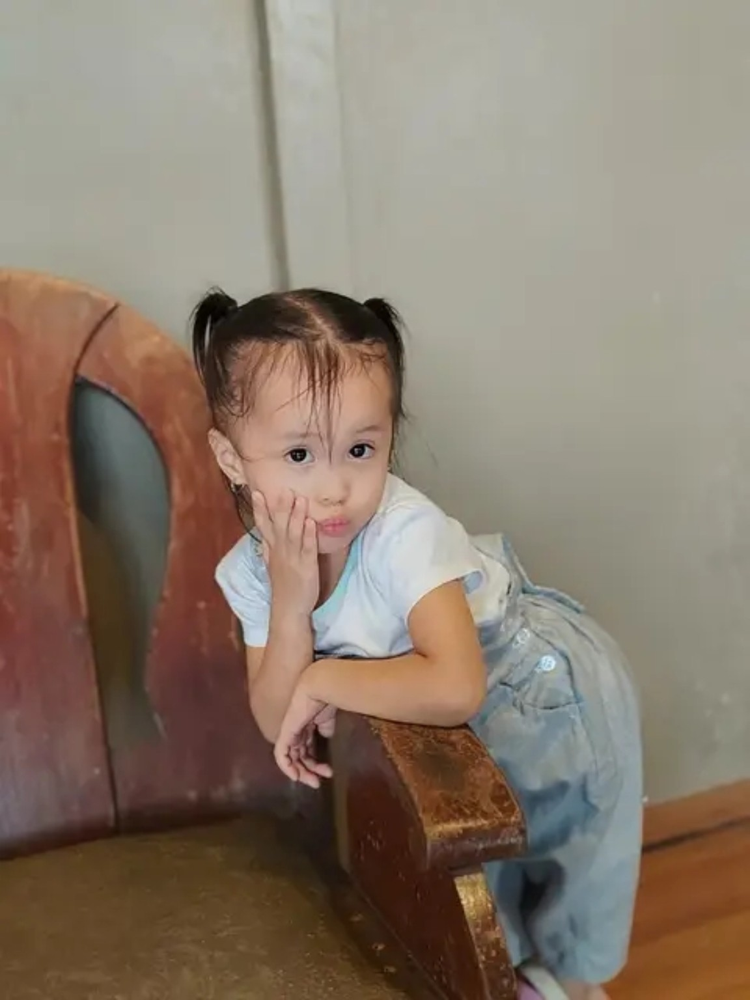

DOS
A BEAUTIFUL BLESSING
The Christening
of Dos & Nayah
Two little blessings, one beautiful day.
NAYAH
San Xianayah C. Zara
WITH LOVE & GRATITUDE
Two precious gifts from God
With joyful hearts, we invite you to celebrate the christening of our beloved daughters, Dos and Nayah, as they begin a beautiful journey of faith surrounded by family and friends.
Leony Flor Carani&Adrian Zaratheir parents
SAVE THE DATE
Wednesday, October 28, 2026
Please join us for a morning of blessings, prayer, family and celebration.
✧7:30 AMChristening Ceremony
♡11:00 AMReception
COUNTDOWN
＋ Add to Google Calendar
THE CELEBRATION
Where to join us
Christening Ceremony
St. Jude Thaddeus Chapel
Wednesday, October 28, 2026
7:30 AM
Brgy. Fabrica, San Vicente, Camarines Norte
View Map ↗Reception
Zara Residence
Wednesday, October 28, 2026
11:00 AM
Apitong St., Purok 1, Brgy. Fabrica, San Vicente, Camarines Norte
View Map ↗DRESS CODE
Colors that match our theme
Guests are encouraged to wear colors that complement the celebration’s soft, elegant palette — ivory, white, blush pink, champagne, beige, soft blue, or other gentle pastel shades.
Your presence is what matters most. Thank you for celebrating with us!
RSVP
Kindly confirm your attendance
Please let us know if you’ll be joining Dos and Nayah on their special day.
Please RSVP by October 25, 2026.
♡ Open RSVP Form Scan the QR code or tap the button to RSVP.Need help with your RSVP?Leony Flor E. Carani0967 859 1070
A BLESSING FROM THE WORD
“Let the little children come to me”
“Jesus said, ‘Let the little children come to me, and do not hinder them, for the kingdom of heaven belongs to such as these.’”
Matthew 19:14
WITH LOVE FROM THEIR GODPARENTS
Ninongs & Ninangs
Thank you for being part of Dos and Nayah’s journey of faith.
Dos’ Ninongs
- Alejo S. Agot
- Jonah Franz Omaña
- Rolando Parro Jr.
- Xydrex Dolor
- Royette Olis
- Isagani Camacho Jr.
- James Salientes
- Andrie Sanchez
- Anthony Alban
- Niño Kiel Zara
Dos’ Ninangs
- Regine San Juan
- Rochelle Balon
- Jonalyn Panotes
- Danah Jean Delos Santos
- Angelica Gutierrez
- May Ann Ilan
- Pauline Rey
- Hyasenth Maigue
- Thea Sal
- Sheena Terco
Nayah’s Ninongs
- Mark Julius D. Litana
- Rwin Ablaneda
- Chester Deuda
- Frytz Ernest Lagrimas
- Sin Sal
- Melver Bulawan
- Jonathan Ubalde
- Jerimar Padro
- Jerome Nuelan
- Jomar Zantua
Nayah’s Ninangs
- Dulce Amor Camelon
- Rose Ann Lopez
- Kainna Macapagal
- Luzviminda Mago
- Hazel Samonte
- Joahnna Imperial
- Kirsten Roi Ann Cuaño
- Jemmabel Francia
- Faudia Labanairi
- Wency Deauna
LITTLE MOMENTS
Dos & Nayah
A growing collection of sweet memories. More photos can be added anytime.







A LITTLE GUIDE
Frequently asked
Where is the christening?
At St. Jude Thaddeus Chapel, Brgy. Fabrica, San Vicente, Camarines Norte, at 7:30 AM.
Where is the reception?
At Zara Residence, Apitong St., Purok 1, Brgy. Fabrica, San Vicente, Camarines Norte, starting at 11:00 AM.
How do I RSVP?
Scan the RSVP QR code or tap the RSVP button above to open the Google Form and confirm your attendance by October 25, 2026. You may also contact Leony Flor E. Carani at 0967 859 1070.
What should I wear?
Please wear colors that match the soft Christening theme, such as ivory, white, blush pink, champagne, beige, soft blue, or other gentle pastel shades.
Can I see the invitation on my phone?
Yes. This invitation is designed to be mobile-friendly and can be opened from a phone browser.
What song was chosen for the invitation?
The selected song is “Sunshine” by Scandinavianz. Tap the music button to play or pause the song.
A DAY TO REMEMBER
May they always
walk in His light.
Thank you for surrounding our family with your love, prayers, and support as we celebrate this beautiful new beginning.
Dos & Nayah28 · 10 · 2026